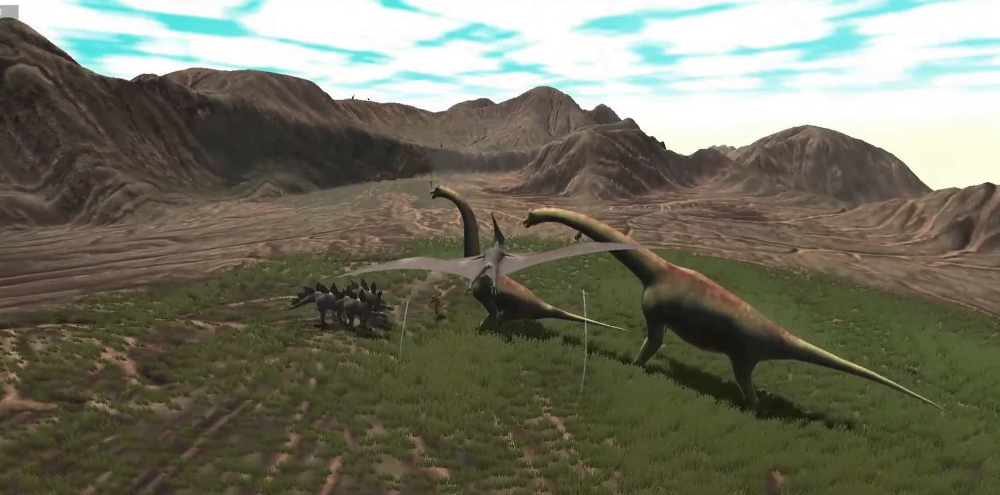

Beta de teste
Esta versão do Primitive Earth é exclusivamente para testes. Bugs e mudanças de balanceamento fazem parte desta etapa. Sua experiência ajuda a encontrar problemas e a melhorar o jogo.
Baixe o jogo para testar
- Plataforma
- Windows x64
- Formato
- .rar
O Google Drive fornece o arquivo. Se aparecer uma confirmação, prossiga por lá.
Como instalar
- Baixe o arquivo .rar usando o botão de download.
- Extraia todo o conteúdo do .rar para uma pasta.
- Abra Primitive Earth.exe na pasta extraída.
Obrigado por participar do teste!
Se publicar uma review ou um vídeo, mencione Primitive Earth, use #PrimitiveEarth e marque @primitive-earth no YouTube.
Encontrou um bug? Conte o que aconteceu e como repetir o problema no Discord.